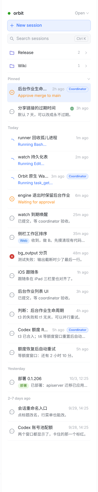
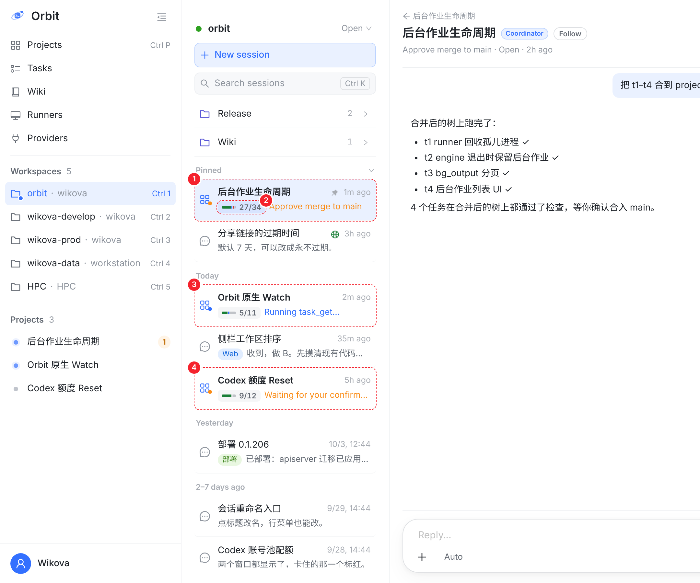
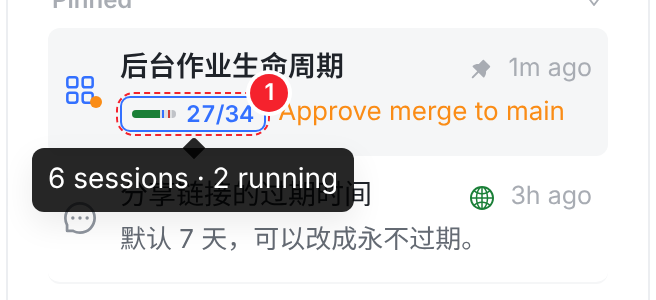
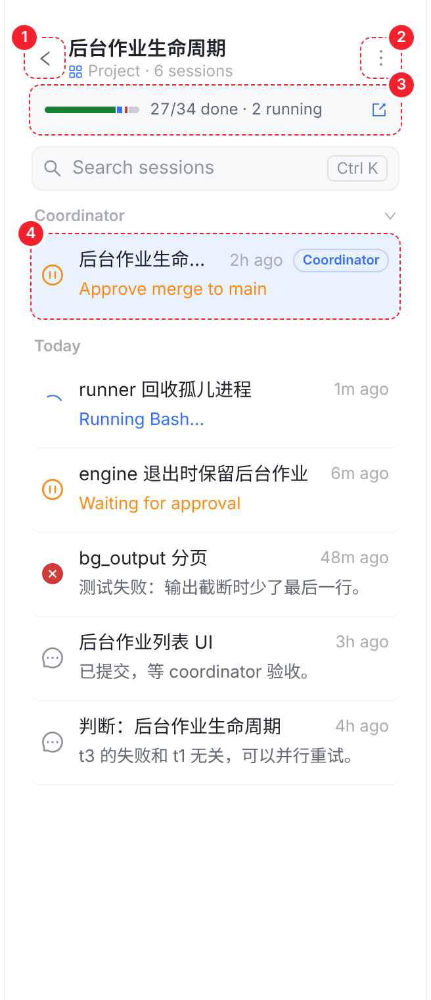
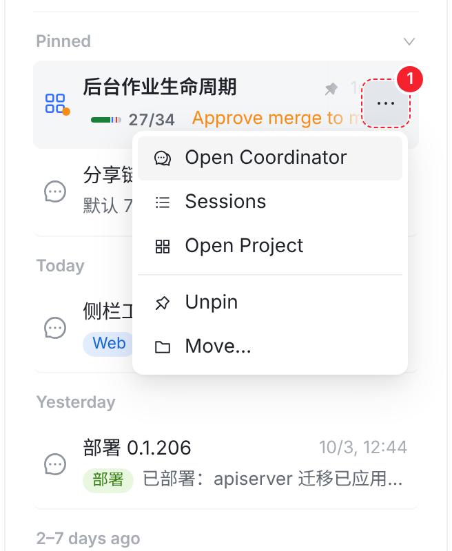
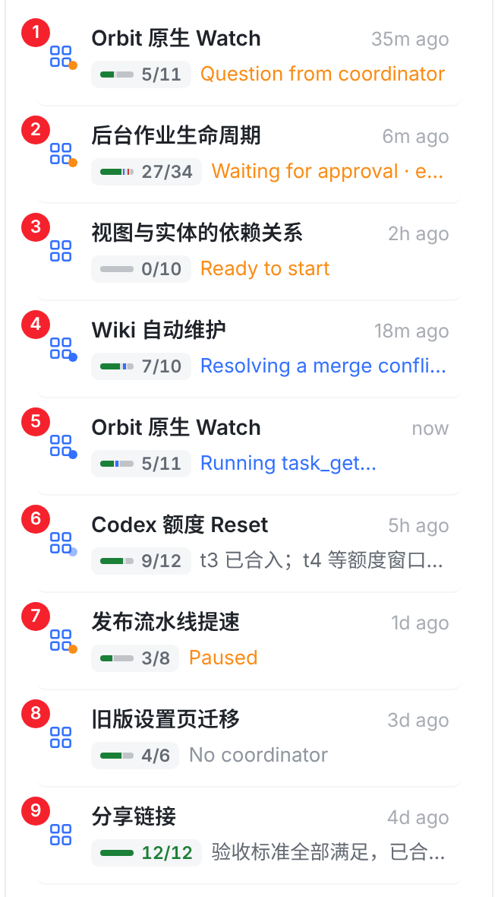

项目条目就是 coordinator 那一行，和会话行一样高：第 1 行是项目名和时间，第 2 行开头是项目进度，后面是 coordinator 说的话。点条目直接打开 coordinator 对话，这一点和文件夹不同。执行任务的会话收在它后面，列表里不展开，一个项目永远只占一行；某个执行会话等你时，第 2 行改写它，点条目直接进它。每张图都在真实 Web 控制台上截取，新加的部分直接用控制台自己的样式画进页面；红色虚线和数字是标注。

3 个项目的 coordinator（带 Coordinator 标）和 9 个执行、判断会话按时间混在一起；你要找的 coordinator 被挤在中间。



?project=<id>，浏览器后退、刷新都能回到对的地方。GET /sessions?projectId=），不只当前这个 Workspace 的。
OwnerConfirmationCard.test 也要求会话列表上不能有回答入口）。
| 情况 | 列表怎么显示 |
|---|---|
| Open / Completed | 视图里有这个项目的任何一个会话，就显示项目条目；标记只算这个视图里的会话（同文件夹） |
| Trash、Filter by Tag、Group by Tag、搜索 | 平铺，不合并，免得两套分组叠在一起（同文件夹） |
| 条目的位置 | 占 coordinator 的位置：coordinator 置顶就在 Pinned，否则按组里最新的活动时间进时间分组 |
| 条目的高度 | 和会话行一样；列表里不展开，一个项目永远只占一行 |
| 执行会话等你 | 项目条目第 2 行改写它，点条目直接进它（coordinator 也在等你时先说 coordinator）；Needs-you 提示条和推送照旧 |
| 文件夹 | coordinator 在哪个文件夹，项目条目就在哪个文件夹；成员会话一律显示在项目条目下面，不能单独放进文件夹 |
| 跨 Workspace | 每个有成员会话的 Workspace 都显示这个项目条目，内容相同；标记只算本 Workspace 的会话；点了照样打开 coordinator |
| 哪些会话算成员 | coordinator、执行任务的会话、@ 任务发起的对话、coordinator 的判断会话，以及它们的子会话（服务端新字段 projectMembership） |
| 老服务器 | 不返回 projectMembership 时照旧平铺，和现在一样 |